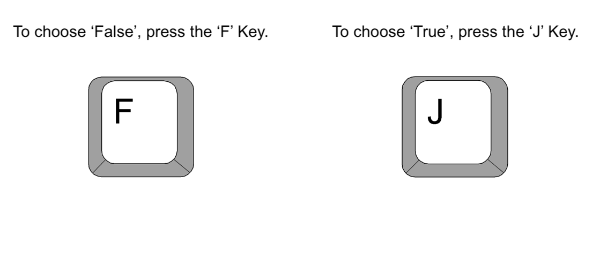

<!DOCTYPE html>
<html>

<head>
  <title>Study 1</title>
  <script src="https://unpkg.com/jspsych@7.3.3"></script>
  <script src="https://unpkg.com/@jspsych/plugin-html-keyboard-response@1.1.2"></script>
  <link href="https://unpkg.com/jspsych@7.3.3/css/jspsych.css" rel="stylesheet" type="text/css" />
  <script src="https://unpkg.com/@jspsych/plugin-html-slider-response@1.1.2"></script>
  <script src="https://unpkg.com/@jspsych/plugin-instructions@1.1.3"></script>
  <script src="https://unpkg.com/@jspsych/plugin-preload@1.1.2"></script>
  <script src="stimuli4.js"></script>
  <style>
    .jspsych-display-element {
      font-size: 23px;
    }

    p {
      margin-bottom: 20px;
    }

    .stimulus-container {
      width: 1000px;
    }

    .headline-text {
      margin-left: 20px;
    }

    .headline-image {
      width: 40%;
      height: 40%;
      margin-top: 60px;
    }
  </style>
</head>

<body></body>
<script>

  /* initialize jsPsych */
  var jsPsych = initJsPsych();

  /* create timeline */
  var timeline = [];

  /* preload images for instrucions */
  var preload = {
    type: jsPsychPreload,
    images: ["instructions-keys.png", "instructions-buttons.png"],
  };

  /* define welcome message trial */
  var welcome = {
    type: jsPsychHtmlKeyboardResponse,
    stimulus: "Welcome to the experiment. Press any key to begin.",
  };
  timeline.push(welcome);

  /* Final block of instructions */
  var introduction = {
    type: jsPsychInstructions,
    pages: [
      `<div style="width:750px;">
        <p>You will now be shown five statements. For each statement you will be asked to indicate to what extent you agree or disagree with that statement.</p>
        </div>`],
    show_clickable_nav: true,
  };
  timeline.push(introduction);

  var priors = [] // initializing an array for saving participants' priors for each topic

  var prior1 = {
    type: jsPsychHtmlSliderResponse,
    stimulus: `<div style="width:500px;">
        <p>Human activity causes climate change</p>
        </div>`,
    min: -100,
    max: 100,
    slider_start: 0,
    require_movement: true,
    labels: ["100% Disagree", " ", "100% Agree"],
    on_finish: function() {
      priors.push(jsPsych.data.get().last().values()[0].response) // this is to save the prior for this topic
    }
  };
  timeline.push(prior1);
  

  var prior2 = {
    type: jsPsychHtmlSliderResponse,
    stimulus: `<div style="width:500px;">
        <p>It is safe to get vaccinated against Covid-19</p>
        </div>`,
    min: -100,
    max: 100,
    slider_start: 0,
    require_movement: true,
    labels: ["100% Disagree", " ", "100% Agree"],
    on_finish: function() {
      priors.push(jsPsych.data.get().last().values()[0].response)
    }
  };
  timeline.push(prior2);

  var prior3 = {
    type: jsPsychHtmlSliderResponse,
    stimulus: `<div style="width:500px;">
        <p> GMO (Genetically modified organism) foods are harmful to human health</p>
        </div>`,
    min: -100,
    max: 100,
    slider_start: 0,
    require_movement: true,
    labels: ["100% Disagree", " ", "100% Agree"],
    on_finish: function() {
      priors.push(jsPsych.data.get().last().values()[0].response)
    }
  };
  timeline.push(prior3);

  var prior4 = {
    type: jsPsychHtmlSliderResponse,
    stimulus: `<div style="width:500px;">
        <p>Radiation from 5G technology is harmful to humans</p>
        </div>`,
    min: -100,
    max: 100,
    slider_start: 0,
    require_movement: true,
    labels: ["100% Disagree", " ", "100% Agree"],
    on_finish: function() {
      priors.push(jsPsych.data.get().last().values()[0].response)
    }
  };
  timeline.push(prior4);

  var prior5 = {
    type: jsPsychHtmlSliderResponse,
    stimulus: `<div style="width:500px;">
        <p>Widespread voter fraud took place during the US 2020 presidential election</p>
        </div>`,
    min: -100,
    max: 100,
    slider_start: 0,
    require_movement: true,
    labels: ["100% Disagree", " ", "100% Agree"],
    on_finish: function() {
      priors.push(jsPsych.data.get().last().values()[0].response)
    }
  };
  timeline.push(prior5);

  /* Final block of instructions */
  var instructions = {
    type: jsPsychInstructions,
    pages: [
      `<p>Great!  We can now begin the experiment.</p>`,
      `<p>You will now be shown a series of headlines, and we will ask you to indicate you think the headline is <b>true</b> or <b>false</b></p>`,
      `</img>`,
      `<p>Note: for each choice you will have 7 seconds to make your decision</p>`,
      `<p>Whenever you're ready, click the 'next' button to begin the experiment.</p>`,
    ],
    show_clickable_nav: true,
  };
  timeline.push(instructions);

  /* Create fixation crosses */
  var fixation = {
    type: jsPsychHtmlKeyboardResponse,
    stimulus: '<div style="font-size:60px;">+</div>',
    choices: "NO_KEYS",
    trial_duration: 1000,
    data: {
      task: "fixation",
    },
  };
  timeline.push(fixation);

  /* Create a randomply sampled array of headlines to loop through */
  var headlines = jsPsych.randomization.sampleWithoutReplacement(
    headline_stimuli,
    headline_stimuli.length
  );

  /* This function will later be used to set the congruence of a
   headline depending on the prior for the topic at hand */
  function congruence_function(topic_nr, info, flip) {
    // Determine prior based on topic number
    prior = priors[topic_nr]
    // the separation based on 'flip' is to account for the way the measurement questions are formulated
    if (flip == false) {
      if ((prior > 0 && info == true) || (prior < 0 && info == false)) {
        return "Congruent";
      } else {
        return "Incongruent";
      }
    } else {
      if ((prior > 0 && info == true) || (prior < 0 && info == false)) {
        return "Incongruent";
      } else {
        return "Congruent";
      }
    }
  }

  /* Create blank screen to place after each trial */
  var blank = {
    type: jsPsychHtmlKeyboardResponse,
    stimulus: '<div style="font-size:60px;"> </div>',
    choices: "NO_KEYS",
    trial_duration: 800,
    data: {
      task: "blank",
    },
  };

  /* For loop to add stimuli to timeline by going through headline_stimuli */
  for (let i = 0; i < headline_stimuli.length; i++) {
    var headline_trial = {
      type: jsPsychHtmlKeyboardResponse,
      stimulus:
        `<div class="stimulus-container">` +
        `<p class="headline-text">` +
        headlines[i].text +
        `</p>` +
        `` +
        `</div>`,
      choices: ["f", "j"],
      trial_duration: 8000,
      data: {
        topic: headlines[i].topic,
        code: headlines[i].code,
        info: headlines[i].info,
        length: headlines[i].length,
        trial: i + 1, // check to make sure this works
      },
      /* The following function retrieves the participant's prior depending on the topic,
      and compares that to the truth of the stimulus to determine its congruence for the participant */
      on_finish: function (data) {
        info = headlines[i].info;
        flip = headlines[i].flipped;
        if (headlines[i].topic == "Climate Change") {
          data.congruence = congruence_function(0, info, flip);
        } else if (headlines[i].topic == "Vaccination") {
          data.congruence = congruence_function(1, info, flip);
        } else if (headlines[i].topic == "GMO") {
          data.congruence = congruence_function(2, info, flip);
        } else if (headlines[i].topic == "5G") {
          data.congruence = congruence_function(3, info, flip);
        } else {
          data.congruence = congruence_function(4, info, flip); // this might change depending on how the measurement question is formulated
        }
      },
    };
    timeline.push(headline_trial);
    timeline.push(blank);
  }

  /* start the experiment */
  jsPsych.run(timeline);
</script>

</html>